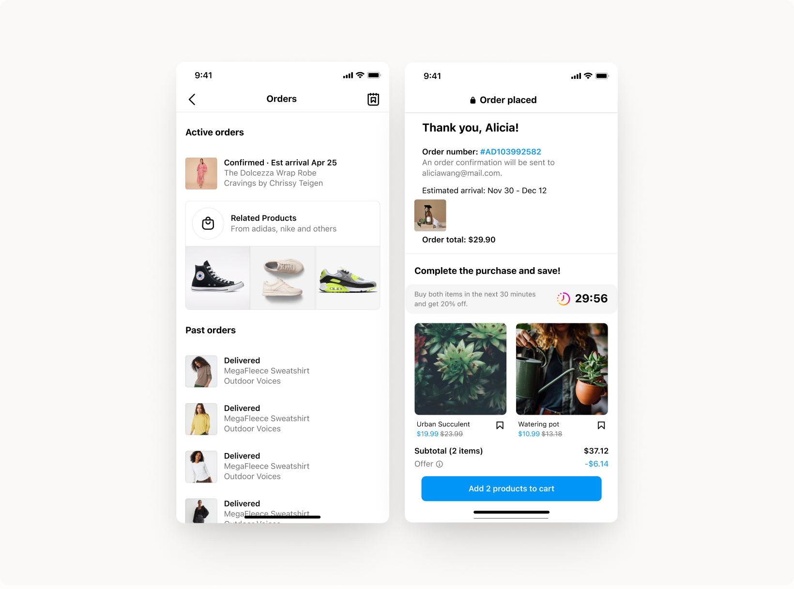
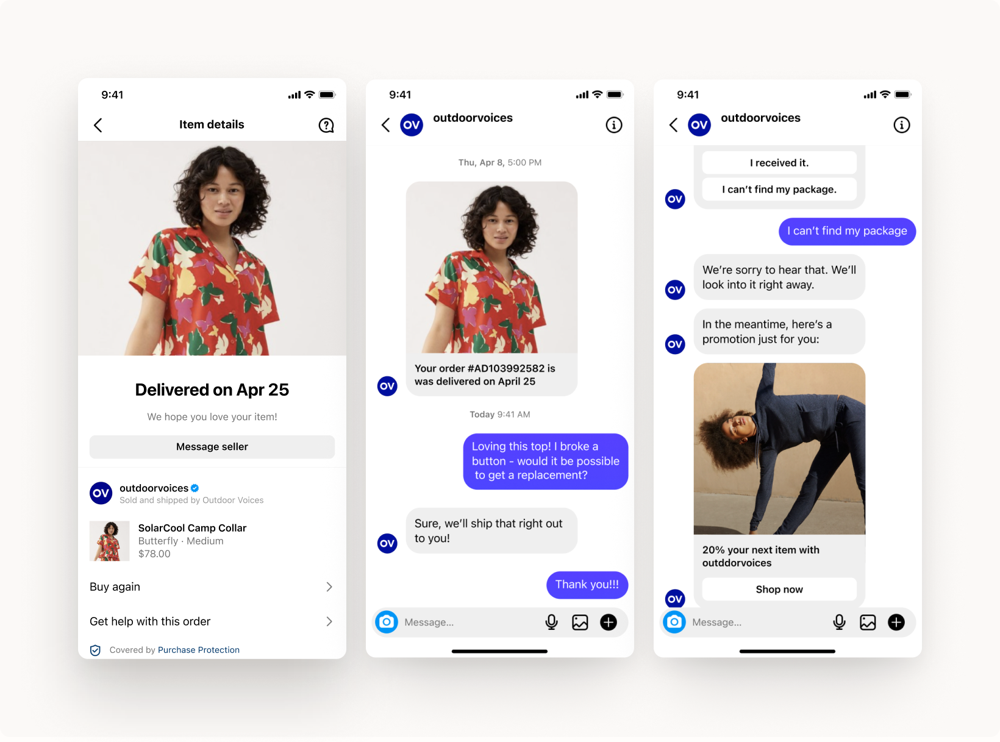
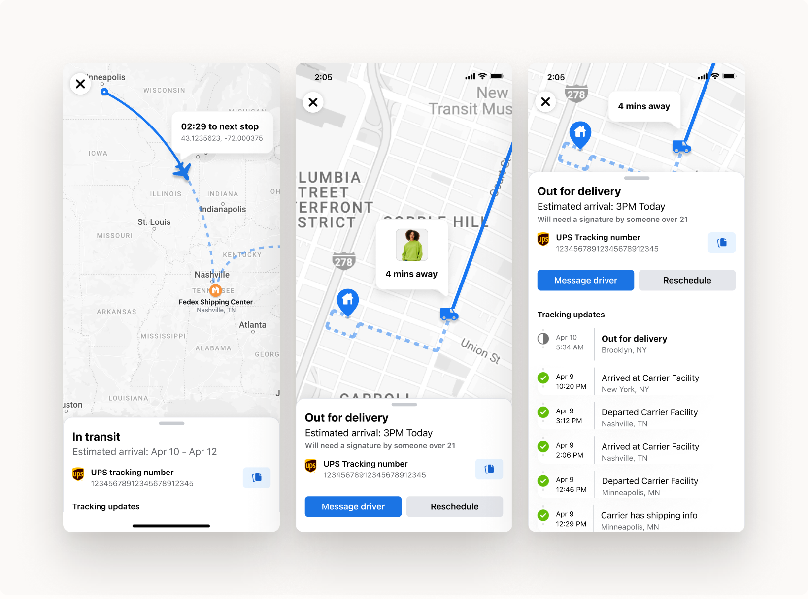

On the Post-Purchase team at Meta, I was tasked with our re-engagement strategy after purchase. How do we give sellers a way to engage their customers, and buyers a reason to come back to shop on the Meta apps?

Using messaging as a single touchpoint for buyers to manage their orders, and for brands to nurture them in an informal and engaging way.

Creating anticipation and excitement around delivery with a differentiated visual tracking experience.